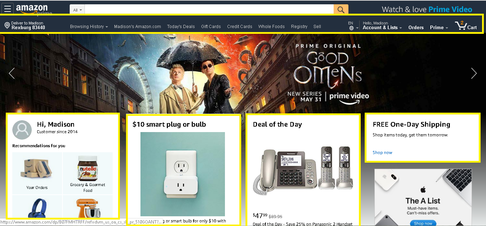

Design - Analysis Assessment
https://www.amazon.com/
Design Principles
Proximity — Lystra Zibiah Thamizhmaran

The Proximity in this website is so clear and the sharpness is well presented and the relationship between the products is so clear where the audience will be able to easily find the products that they need immediately. It is so clear and visible that the border makes the audience get attracted to the products that they are selling. The Proximity in this website makes the product closely together in one unit, where the objects are so visible for the audience to find.
Alignment — Madison Whitlock
Overall, when you have good alignment, the website flows smoother and is easy for the viewer to see content and navigate through the site more effectively. In the example of Amazon, they use alignment of the header and their graphical boxes to draw the eye to different parts of the website. The header is centered at the top of the page and the boxes are horizontally and vertically aligned near the center of the page to have the user move their focus throughout, leading to the bottom. This alignment helps with the organization and flow of the website.
Repetition — Kianna Baird

Repetition is shown all throughout the website. It creates unity as well as an appealing design. One way Amazon has used repetition is in their font. They have chosen the same font all throughout the website, even though they use different sizes and weights. The color white is also a repetitive attribute to Amazon’s website. They use it as the font color in the heading as well as the background color for the product blocks in the bottom half of the image.
Contrast — Serena Spotten

Contrast is a big part of any website. Without contrast the page would look very flat and uninviting. Contrast is also a way to guide your viewers toward points of interest on the site. In this example I have outlined in read where some of the points of highest contrast can be seen. The first is the search bar, which is one of the first things that you see when you look at the sight because the contrast of the white against the dark blue makes it stand out. Since this is a shopping site, it helps the viewer know where to go to search for the products that they want. The text itself is also a point of heavy contrast, which makes it easy to read. Lastly, your eye moves toward the white boxes in the bottom because the box is easily seen against the dark blue image in the back. These points of contrast draws your eye where the site wants you to look first, seconds, and then third as you go down the page.
Typography — Kianna Baird

Amazon is known for their simple, sans-serif fonts. It demonstrates a welcoming, simple feel all throughout their site. Instead of using several fonts, they have stuck with a single fonts that is bolded to emphasize specific titles. You can see on the home page that the font is the same, but they have used different weights emphasizing the products for Mother’s Day. Along with font weights, they also utilize font size to add emphasis to certain phrases.
Site Purpose Statement
We provide customers with easy access to a variety of products at an unbeatable price. Consumers return to our site because of the quick shipping and quality of our products. We are known for our fast, reliable, easy ordering process and great customer service.
Target Audience
- Age: 12 - 60+
- Occupation: Mid-wage Jobs
- Income: $30,000-$100,000
- Other: People who don’t like to go out to the store or are known to get things last minute.
Persona
- Name: Susan Johnson
- Occupation: Elementary School Teacher
- Primary Device: Laptop
- Quote: “Amazon is a life saver. I am always in need of new books and school supplies. Amazon is the best option for me as I can buy what I need for a great price and receive my order within a few days.”